onAir
An AI-powered wearable device that reshapes the relationship between humans and airbone particles

Industrial design project
Framework: PyTorch
IDE:Jupyter Notebook
PROJECT CONTEXT
Allergies are interactions between humans and the invisible world round us
A growing body of research shows that people's pollen allergies are getting worse due to global warming. If we consider allergy as our immune systems dispelling the particles in the air, the worsening of allergy resulting from human activities can be regarded as nature expressing its intolerance to human beings.

CONCEPT
How might we reshape this interaction?
The goal of the project is to transform allergies which are negative interactions between humans and nature, by creating a new approach that not only raises awareness of airborne particles but also alerts those with allergic issues to take prcautions.

FORM FINDING
Take a look at allergic responses
For the form finding part, the inspiration came from allergic responses.
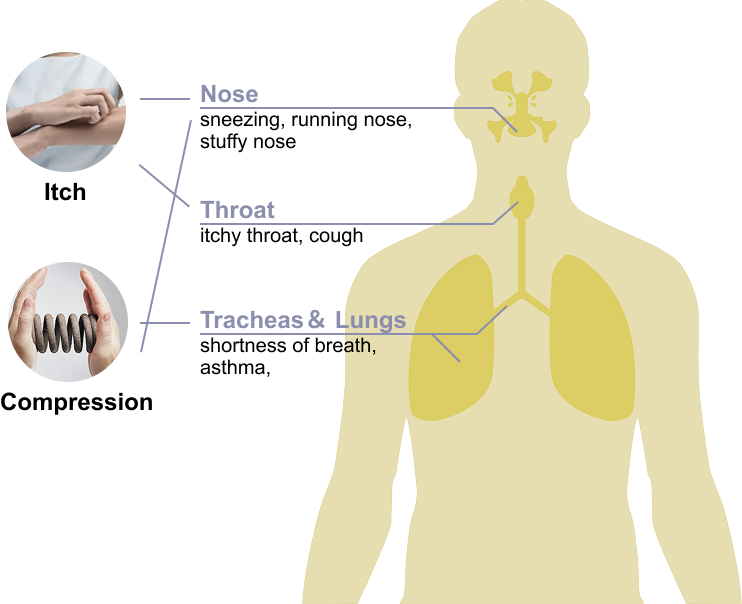
Different body parts react differently to allergens. The warning signals can be applied to these areas to emulate the corresponding sensations.
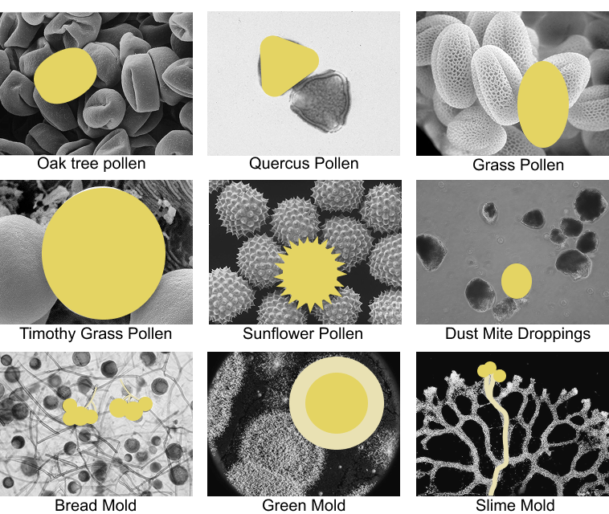
The shapes of particles can be extracted and incorporated into the design of the device.
EXPERIMENT
What sensations can different shapes of air bags evoke on distinct human body parts?
I made samples of shapes extracted from natural particles and pumped air inside. The samples were placed on various parts of body. I then asked participants to report their feelings
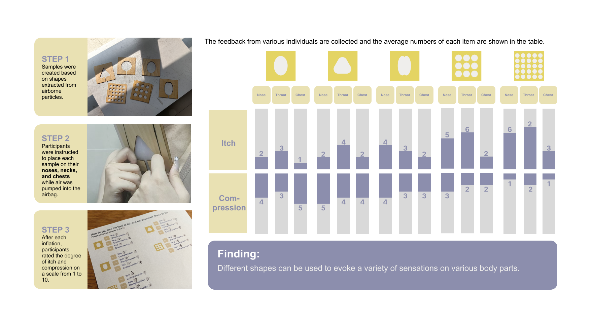
ITERATION
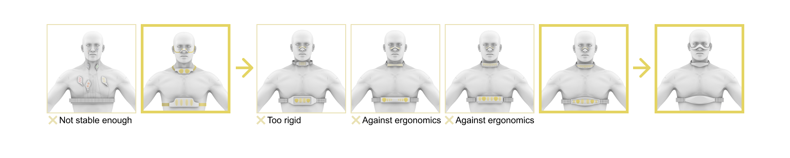
MODEL TRAINING
CNN on pollen identification and classification
I obtained high-quality datasets of different pollens via Kaggle. I then cleaned and labeled it. In this case, I employeed CNN via PyTorch. After 4 epochs, the result was desirable
MECHANICAL DETAILS
The effects were acheived through the following mechanical system. Due to technical constraints, for the prototyping part, I utilized a production-ready partical sensor.
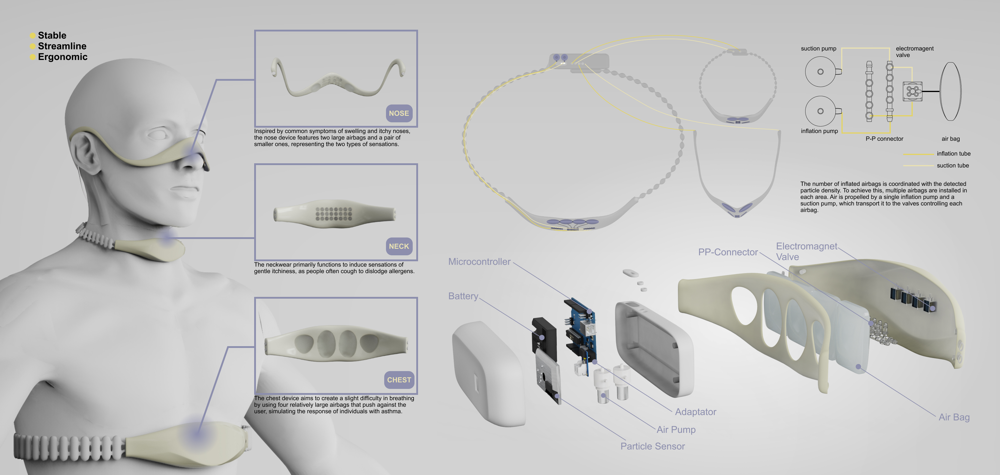
The three devices can be used independently based on the user's needs. This flexibility is facilitated by a removable central control box. By connecting tubes to the box, air can be directed in and out of each device.
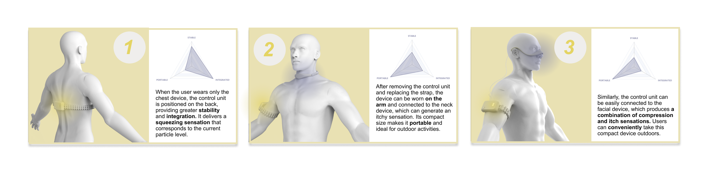
PROCESS
A pysical prototype of the device
I made samples of shapes extracted from natural particles and pumped air inside. The samples were placed on various parts of body. I then asked participants to report their feelings
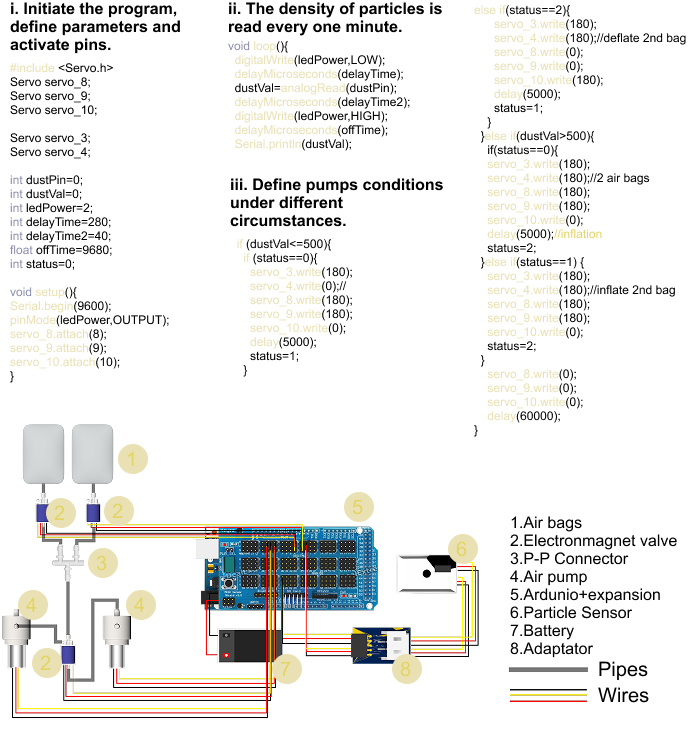
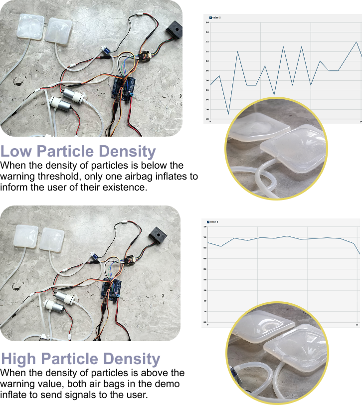
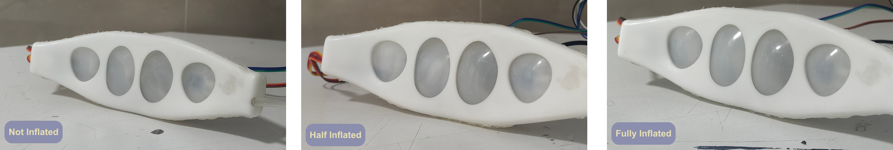
STORYBOARD
OnAir helps people with allergies to take preventive measures
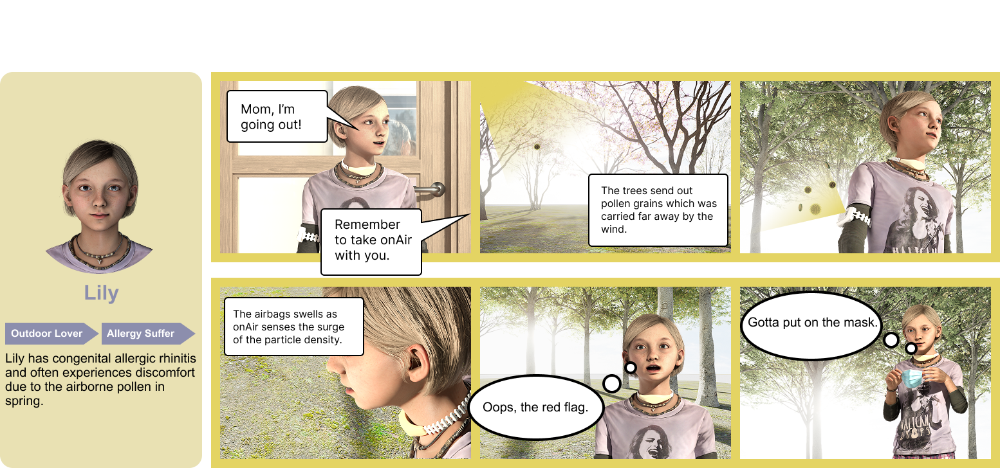
OnAir helps people to interact with the microcosm
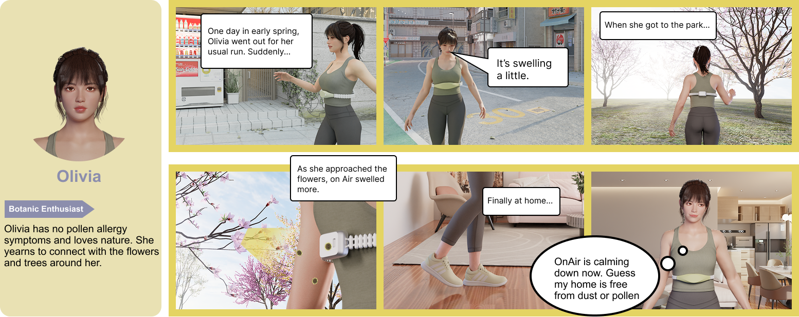